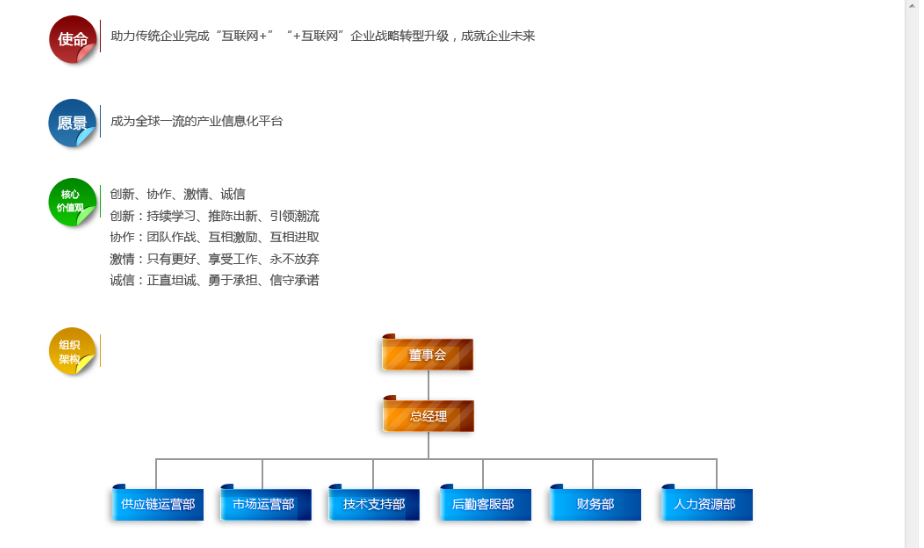
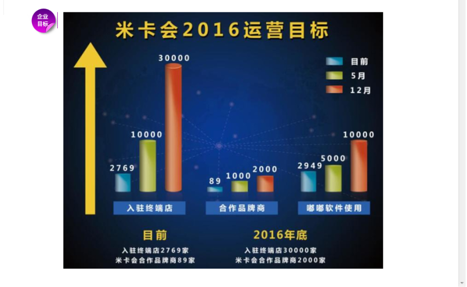

传统渠道传统思维，步履维艰。各种电商平台进驻行业，产品严重同质化，冗长的销售层级渠道，加价环节增多，服务链条变长，各级渠道间信息桎梏，难于沟通。供应商投入高成本产品却卖不出去，库存积压资金积压严重；服务商代理产品品类单一，无法满足终端；终端门店找不到优质的高利润产品，技术服务无法满足车主。。。面对如此困境，传统企业都致力于寻求新模式新渠道的转变，寻找新的出路，奈何转型艰辛，大量资金投入，往往收效甚低，企业苦不堪言。
米卡会是依托九州国际20多年沉淀，汽车后市场传统生态链与互联网技术推出的汽车产业信息化平台。平台集展示、查询、资讯、交流、交易于一体，实现工厂与门店的无缝连接，将给传统汽车用品后市场带来轻资本的互联网战略升级，打造专业细致的汽车产业信息化平台。
平台提供动态的品牌产品展示及专车专用展示，供应商可以将品牌产品信息动态直观地展示给终端门店，终端门店通过平台获取厂家提供的第一手最专业的行业资讯。在米卡会平台，供应商与终端店实时互动，供应商可以将最新的资讯信息迅速传递，促进终端店的技术服务提升。终端门店则可以将最新的技术需求产品需求反馈，促进供应商技术产品革新。基于互联网的点对点实时交易，缩短的中间层级，减少中间环节产生的重复成本。海量的供应商可以与平台优质的终端店进行交易，海量的高利润货源、优质精准的海量终端买家，完美对接，实现共赢。
米卡会还推出代理商转型服务商模式，为服务商提供大量的回报政策，助力服务商轻资本转型。米卡会给服务商最好的产品代理，帮选择最好的高利润畅销产品，同时免费建立本地化电商运营平台。服务商由传统的销售模式转型为以运营服务为经营重心，降低成本提高效率。服务商借助平台大数据资源实现信息化营销转变，为平台所有供应商提供运营服务，品类更加多样化，更加能满足终端门店。
2016年，米卡会将会迎来爆发。到2016年底，进驻米卡会的厂家供应商将会达到2000家，入驻终端店将达到30000家。各地级市将会拥有米卡会运营服务商协作地区运营服务。米卡会也会优化服务模式，提供更多元化服务，全面助力传统企业升级，完成“互联网+”“+互联网”企业战略升级。
米卡会是依托九州国际20多年沉淀，汽车后市场传统生态链与互联网技术推出的汽车产业信息化平台。平台集展示、查询、资讯、交流、交易于一体，实现工厂与门店的无缝连接，将给传统汽车用品后市场带来轻资本的互联网战略升级，打造专业细致的汽车产业信息化平台。
平台提供动态的品牌产品展示及专车专用展示，供应商可以将品牌产品信息动态直观地展示给终端门店，终端门店通过平台获取厂家提供的第一手最专业的行业资讯。在米卡会平台，供应商与终端店实时互动，供应商可以将最新的资讯信息迅速传递，促进终端店的技术服务提升。终端门店则可以将最新的技术需求产品需求反馈，促进供应商技术产品革新。基于互联网的点对点实时交易，缩短的中间层级，减少中间环节产生的重复成本。海量的供应商可以与平台优质的终端店进行交易，海量的高利润货源、优质精准的海量终端买家，完美对接，实现共赢。
米卡会还推出代理商转型服务商模式，为服务商提供大量的回报政策，助力服务商轻资本转型。米卡会给服务商最好的产品代理，帮选择最好的高利润畅销产品，同时免费建立本地化电商运营平台。服务商由传统的销售模式转型为以运营服务为经营重心，降低成本提高效率。服务商借助平台大数据资源实现信息化营销转变，为平台所有供应商提供运营服务，品类更加多样化，更加能满足终端门店。
2016年，米卡会将会迎来爆发。到2016年底，进驻米卡会的厂家供应商将会达到2000家，入驻终端店将达到30000家。各地级市将会拥有米卡会运营服务商协作地区运营服务。米卡会也会优化服务模式，提供更多元化服务，全面助力传统企业升级，完成“互联网+”“+互联网”企业战略升级。

